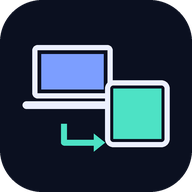

<!doctype html>
<html lang="fr">
<head>
<meta charset="utf-8">
<meta name="viewport" content="width=device-width,initial-scale=1,viewport-fit=cover">
<meta name="theme-color" content="#0B1020">
<meta name="referrer" content="no-referrer">
<meta name="mobile-web-app-capable" content="yes">
<meta name="apple-mobile-web-app-capable" content="yes">
<meta name="apple-mobile-web-app-title" content="Miroir">
<title>Miroir d'écran</title>
<link rel="manifest" href="manifest.json">
<link rel="icon" type="image/png" href="icons/icon-192.png">
<link rel="apple-touch-icon" href="icons/apple-touch-icon.png">
<style>
:root{--bg:#0B1020;--card:#141B33;--line:#26304F;--text:#ECF0FF;--muted:#9AA6C8;--accent:#7C9EFF;--accent2:#4DE2C5;--danger:#FF7A8A;--warn:#FFC86B;color-scheme:dark}
*{box-sizing:border-box}
html,body{margin:0;height:100%}
body{background:var(--bg);color:var(--text);font:16px/1.5 system-ui,-apple-system,"Segoe UI",Roboto,sans-serif;-webkit-tap-highlight-color:transparent}
#app{max-width:760px;margin:0 auto;padding:max(20px,env(safe-area-inset-top)) 16px max(28px,env(safe-area-inset-bottom))}
header{display:flex;align-items:center;gap:12px;margin-bottom:20px}
header img{width:40px;height:40px;border-radius:10px}
header h1{font-size:20px;margin:0;line-height:1.2}
header span{display:block;font-size:13px;color:var(--muted);font-weight:400}
.net{margin-left:auto;font-size:13px;color:var(--muted);display:flex;align-items:center;gap:6px;white-space:nowrap}
.dot{width:9px;height:9px;border-radius:50%;background:var(--warn);flex:none}
.dot.ok{background:var(--accent2)}.dot.off{background:var(--danger)}
.card{background:var(--card);border:1px solid var(--line);border-radius:18px;padding:22px;margin-bottom:16px}
.card h2{margin:0 0 6px;font-size:22px;line-height:1.25}
.card h3{margin:0 0 8px;font-size:16px}
p{margin:0 0 12px;color:var(--muted)}
p b,li b{color:var(--text)}
.btn{appearance:none;border:0;border-radius:14px;padding:14px 20px;font:600 16px/1.2 inherit;color:#0B1020;background:var(--accent);cursor:pointer;display:inline-flex;align-items:center;justify-content:center;gap:8px;min-height:48px}
.btn.big{width:100%;font-size:18px;padding:18px}
.btn.ghost{background:transparent;color:var(--text);border:1px solid var(--line)}
.btn.stop{background:var(--danger)}
.btn:focus-visible,.seg button:focus-visible,.link:focus-visible,input:focus-visible{outline:3px solid var(--accent2);outline-offset:2px}
.btn[disabled]{opacity:.5;cursor:default}
.roles{display:grid;gap:12px;grid-template-columns:repeat(auto-fit,minmax(220px,1fr))}
.role{text-align:left;background:var(--card);border:1px solid var(--line);border-radius:18px;padding:20px;color:var(--text);font:inherit;cursor:pointer}
.role b{display:block;font-size:18px;margin:8px 0 2px}.role span{color:var(--muted);font-size:14px}
.role.sug{border-color:var(--accent)}
.seg{display:flex;background:var(--bg);border:1px solid var(--line);border-radius:12px;padding:4px;gap:4px;margin-top:14px}
.seg button{flex:1;border:0;border-radius:9px;padding:10px 8px;background:transparent;color:var(--muted);font:600 14px/1.2 inherit;cursor:pointer}
.seg button.on{background:var(--card);color:var(--text);box-shadow:0 0 0 1px var(--line)}
.stats{font-size:13px;color:var(--muted);margin:12px 0 0;min-height:20px;font-variant-numeric:tabular-nums}
.state{display:flex;align-items:center;gap:10px;margin-bottom:6px}
.pair{display:grid;grid-template-columns:auto 1fr;gap:20px;align-items:center}
.qr{background:#fff;border-radius:12px;padding:8px;width:176px;height:176px}
.qr svg{display:block;width:100%;height:100%}
.code{font:700 28px/1.2 ui-monospace,"Cascadia Mono",Consolas,monospace;letter-spacing:.08em;color:var(--text);margin:4px 0 10px}
ol,ul{margin:0;padding-left:20px;color:var(--muted)}li{margin:4px 0}
.link{background:none;border:0;color:var(--accent);font:inherit;cursor:pointer;padding:4px 0;text-decoration:underline;text-underline-offset:3px}
.foot{display:flex;flex-wrap:wrap;gap:8px 20px;justify-content:center;margin-top:8px;font-size:14px}
input.inp{width:100%;font:700 24px/1.2 ui-monospace,Consolas,monospace;letter-spacing:.12em;text-transform:uppercase;text-align:center;padding:14px;border-radius:14px;border:1px solid var(--line);background:var(--bg);color:var(--text);margin-bottom:12px}
.wait{min-height:calc(100vh - 160px);display:flex;flex-direction:column;justify-content:center;text-align:center}
.wait .pulse{width:84px;height:84px;margin:0 auto 18px;border-radius:24px;background:url(icons/icon-192.png) center/cover;animation:pulse 2.4s ease-in-out infinite}
@keyframes pulse{50%{transform:scale(.94);opacity:.75}}
@media (prefers-reduced-motion:reduce){.wait .pulse{animation:none}}
@media (max-width:520px){.pair{grid-template-columns:1fr;justify-items:center;text-align:center}}
/* tablette : l'écran du PC en plein écran */
#screen{position:fixed;inset:0;width:100%;height:100%;object-fit:contain;background:#000;display:none}
body.live{background:#000;overflow:hidden}
body.live #screen{display:block}
body.live #app{display:none}
#hud{position:fixed;left:0;right:0;bottom:0;padding:16px 16px max(16px,env(safe-area-inset-bottom));display:none;gap:10px;justify-content:center;flex-wrap:wrap;background:linear-gradient(transparent,rgba(0,0,0,.75));transition:opacity .25s}
body.live #hud{display:flex}
#hud.hide{opacity:0;pointer-events:none}
#hud .btn{background:rgba(20,27,51,.92);color:var(--text);border:1px solid var(--line)}
#hud .info{width:100%;text-align:center;font-size:13px;color:#cfd6ee;font-variant-numeric:tabular-nums}
#toast{position:fixed;left:50%;top:max(16px,env(safe-area-inset-top));transform:translateX(-50%);background:var(--card);border:1px solid var(--line);color:var(--text);padding:10px 16px;border-radius:12px;font-size:14px;opacity:0;transition:opacity .25s;pointer-events:none;max-width:calc(100% - 32px);z-index:5}
#toast.on{opacity:1}
</style>
</head>
<body>
<main id="app" aria-live="polite"></main>
<video id="screen" playsinline autoplay muted></video>
<div id="hud" class="hide"></div>
<div id="toast" role="status"></div>
<script src="vendor/peerjs.min.js"></script>
<script src="vendor/qrcode.js"></script>
<script>
'use strict';
/* Miroir d'écran : l'ordinateur capture son écran (getDisplayMedia) et l'envoie à la tablette en WebRTC,
   directement par le Wi-Fi. PeerJS (serveur public 0.peerjs.com) sert seulement à mettre les deux
   appareils en relation ; l'image et le son ne passent pas par lui. */
const $ = (s) => document.querySelector(s);
const store = {
  get(k) { try { return localStorage.getItem(k) || ''; } catch { return ''; } },
  set(k, v) { try { localStorage.setItem(k, v); } catch {} },
};
const PREFIX = 'vous-miroir-';
const ALPHA = 'ABCDEFGHJKMNPQRSTUVWXYZ23456789'; // sans 0/O ni 1/I/L
const app = $('#app'), video = $('#screen'), hud = $('#hud');
const esc = (s) => String(s).replace(/[&<>"']/g, (c) => ({ '&': '&amp;', '<': '&lt;', '>': '&gt;', '"': '&quot;', "'": '&#39;' }[c]));
const fmt = (c) => c.slice(0, 4) + '-' + c.slice(4);
const isTabletUA = /Android|iPad|Tablet/i.test(navigator.userAgent);

const st = { role: store.get('miroir-role'), code: store.get('miroir-code'), quality: store.get('miroir-q') || 'fluide', sound: store.get('miroir-son') === '1' };
function save() { store.set('miroir-role', st.role); store.set('miroir-code', st.code); store.set('miroir-q', st.quality); store.set('miroir-son', st.sound ? '1' : ''); }

/* lien d'appairage scanné sur la tablette : …/miroir/#t=CODE */
const hm = location.hash.match(/[#&]t=([A-Za-z0-9]{8})\b/);
if (hm) { st.role = 'tab'; st.code = hm[1].toUpperCase(); save(); history.replaceState(null, '', location.pathname + location.search); }

function newCode() { const a = new Uint32Array(8); crypto.getRandomValues(a); return [...a].map((x) => ALPHA[x % ALPHA.length]).join(''); }
const pageUrl = () => location.origin + location.pathname;
const pairUrl = () => pageUrl() + '#t=' + st.code;

let toastT = 0;
function toast(m) { const t = $('#toast'); t.textContent = m; t.classList.add('on'); clearTimeout(toastT); toastT = setTimeout(() => t.classList.remove('on'), 3200); }

/* ---------- connexion au service de mise en relation (PeerJS), avec reconnexion automatique ---------- */
const net = { peer: null, id: '', ready: false, fails: 0, timer: 0, onCall: null, onMissing: null };
/* détache l'ancienne connexion avant de la fermer, pour que ses événements ne relancent rien */
function drop() {
  clearTimeout(net.timer);
  const old = net.peer; net.peer = null; net.ready = false;
  if (old && !old.destroyed) old.destroy();
}
function connect(id) {
  drop(); net.id = id;
  const p = new Peer(id, { debug: 1 });
  net.peer = p; net.ready = false; changed();
  p.on('open', () => { if (net.peer !== p) return; net.ready = true; net.fails = 0; changed(); });
  p.on('call', (c) => { if (net.peer === p && net.onCall) net.onCall(c); });
  p.on('disconnected', () => { if (net.peer !== p) return; net.ready = false; changed(); retry(); });
  p.on('error', (e) => {
    if (net.peer !== p) return;
    if (e.type === 'peer-unavailable') { if (net.onMissing) net.onMissing(); return; }
    net.ready = false; changed();
    // id déjà pris : l'ancienne connexion de cet appareil (page rechargée) met quelques secondes à se libérer
    retry(e.type === 'unavailable-id' ? 4000 : 0);
  });
}
function retry(ms) {
  clearTimeout(net.timer); net.fails++;
  net.timer = setTimeout(reconnectNow, ms || Math.min(15000, 1000 * 2 ** Math.min(net.fails, 4)));
}
function reconnectNow() {
  clearTimeout(net.timer);
  const p = net.peer; if (!p || net.ready) return;
  if (p.destroyed) connect(net.id);
  else if (p.disconnected) { try { p.reconnect(); } catch { connect(net.id); } }
}
addEventListener('online', reconnectNow);
document.addEventListener('visibilitychange', () => { if (document.visibilityState === 'visible') reconnectNow(); if (st.role === 'tab') wake(); });
function changed() { if (st.role === 'pc') renderPc(); else if (st.role === 'tab') renderTab(); }
const netBadge = () => `<div class="net"><span class="dot ${net.ready ? 'ok' : net.fails > 2 ? 'off' : ''}"></span>${net.ready ? 'En ligne' : net.fails > 2 ? 'Hors ligne, nouvel essai…' : 'Connexion…'}</div>`;
const head = (sub) => `<header><h1>Miroir d'écran<span>${sub}</span></h1>${netBadge()}</header>`;

/* statistiques WebRTC : définition, images/s, débit, chemin (Wi-Fi direct ou relais Internet) */
const statPrev = new WeakMap();
async function readStats(conn, dir) {
  if (!conn) return '';
  const r = await conn.getStats().catch(() => null); if (!r) return '';
  let rtp = null, pair = null;
  r.forEach((x) => {
    if (x.type === dir && x.kind === 'video') rtp = x;
    if (x.type === 'transport' && x.selectedCandidatePairId) pair = r.get(x.selectedCandidatePairId);
  });
  if (!pair) r.forEach((x) => { if (x.type === 'candidate-pair' && x.nominated && x.state === 'succeeded') pair = x; });
  const parts = [];
  if (rtp && rtp.frameWidth) parts.push(`${rtp.frameWidth}×${rtp.frameHeight}`);
  if (rtp && rtp.framesPerSecond) parts.push(`${Math.round(rtp.framesPerSecond)} i/s`);
  if (rtp) {
    const bytes = dir === 'outbound-rtp' ? rtp.bytesSent : rtp.bytesReceived, prev = statPrev.get(conn);
    if (prev && rtp.timestamp > prev.t) parts.push(`${((bytes - prev.b) * 8 / (rtp.timestamp - prev.t) / 1000).toFixed(1).replace('.', ',')} Mb/s`);
    statPrev.set(conn, { b: bytes, t: rtp.timestamp });
  }
  if (pair) {
    const loc = r.get(pair.localCandidateId), rem = r.get(pair.remoteCandidateId);
    const relay = (loc && loc.candidateType === 'relay') || (rem && rem.candidateType === 'relay');
    const direct = loc && rem && loc.candidateType === 'host' && rem.candidateType === 'host';
    parts.push(relay ? 'via un relais Internet' : direct ? 'Wi-Fi direct' : 'connexion directe');
    if (pair.currentRoundTripTime != null) parts.push(`latence réseau ${Math.round(pair.currentRoundTripTime * 1000)} ms`);
  }
  return parts.join(' · ');
}

/* ---------- choix de l'appareil ---------- */
function renderRoles() {
  document.body.className = '';
  app.innerHTML = `${head('Écran du PC sur la tablette, par le Wi-Fi')}
  <div class="card"><h2>Sur quel appareil es-tu ?</h2><p>Ouvre cette même page sur l'ordinateur et sur la tablette, puis choisis ici.</p>
    <div class="roles">
      <button class="role ${isTabletUA ? '' : 'sug'}" data-a="role" data-v="pc">💻<b>Ordinateur</b><span>Windows : c'est lui qui envoie son écran</span></button>
      <button class="role ${isTabletUA ? 'sug' : ''}" data-a="role" data-v="tab">📱<b>Tablette</b><span>Lenovo Tab : elle affiche l'écran du PC</span></button>
    </div></div>`;
}

/* ---------- ordinateur : capture et envoi ---------- */
const pc = { stream: null, call: null, linked: false, missing: false, timer: 0, stats: '', statsT: 0 };
const tabId = () => PREFIX + st.code + '-tab';
function startPc() {
  if (!st.code) { st.code = newCode(); save(); }
  net.onCall = (c) => c.close(); // l'ordinateur ne reçoit pas d'appel
  net.onMissing = () => { if (pc.linked) return; pc.missing = true; endCall(pc.call, 3000); renderPc(); };
  connect(PREFIX + st.code + '-pc');
  clearInterval(pc.statsT);
  pc.statsT = setInterval(async () => { if (pc.linked) { pc.stats = await readStats(pc.call && pc.call.peerConnection, 'outbound-rtp'); const el = $('#stats'); if (el) el.textContent = pc.stats; } }, 2000);
}
async function share() {
  if (!navigator.mediaDevices || !navigator.mediaDevices.getDisplayMedia) { toast("Ce navigateur ne sait pas partager l'écran : ouvre Miroir dans Edge ou Chrome."); return; }
  let s;
  try {
    s = await navigator.mediaDevices.getDisplayMedia({
      video: { frameRate: { ideal: 30, max: 60 }, width: { max: 1920 }, height: { max: 1080 } },
      audio: true, systemAudio: 'include', selfBrowserSurface: 'exclude', surfaceSwitching: 'include', monitorTypeSurfaces: 'include',
    });
  } catch (e) {
    toast(e && e.name === 'NotAllowedError' ? 'Partage annulé.' : "Impossible de capturer l'écran : " + (e && e.message || e));
    return;
  }
  pc.stream = s; pc.missing = false;
  s.getVideoTracks()[0].addEventListener('ended', stopShare); // bouton « Arrêter le partage » du navigateur
  applyQuality();
  renderPc(); callTablet();
}
function stopShare() {
  clearTimeout(pc.timer);
  if (pc.stream) pc.stream.getTracks().forEach((t) => t.stop());
  pc.stream = null; endCall(pc.call); pc.stats = ''; renderPc();
}
function endCall(c, redial) {
  if (!c || pc.call !== c) return;
  pc.call = null; pc.linked = false;
  try { c.close(); } catch {}
  renderPc();
  if (pc.stream) { clearTimeout(pc.timer); pc.timer = setTimeout(callTablet, redial || 1500); }
}
function callTablet() {
  clearTimeout(pc.timer);
  if (!pc.stream || pc.call) return;
  if (!net.ready) { pc.timer = setTimeout(callTablet, 1500); return; }
  const c = net.peer.call(tabId(), pc.stream);
  if (!c) { pc.timer = setTimeout(callTablet, 3000); return; }
  pc.call = c; pc.linked = false; renderPc();
  const conn = c.peerConnection;
  const guard = setTimeout(() => { if (pc.call === c && !pc.linked) endCall(c); }, 20000);
  let lost = 0;
  if (conn) conn.addEventListener('connectionstatechange', () => {
    const s = conn.connectionState;
    if (s === 'connected') { clearTimeout(guard); clearTimeout(lost); if (pc.call === c) { pc.linked = true; pc.missing = false; applyQuality(); renderPc(); } }
    else if (s === 'failed' || s === 'closed') endCall(c);
    else if (s === 'disconnected') { clearTimeout(lost); lost = setTimeout(() => { if (conn.connectionState !== 'connected') endCall(c); }, 6000); }
  });
  c.on('close', () => endCall(c));
  c.on('error', () => endCall(c));
}
/* Fluide : priorité aux images/s (vidéos) ; Net : priorité à la netteté (texte, documents) */
function applyQuality() {
  const fl = st.quality === 'fluide', v = pc.stream && pc.stream.getVideoTracks()[0];
  if (v && 'contentHint' in v) v.contentHint = fl ? 'motion' : 'detail';
  const conn = pc.call && pc.call.peerConnection; if (!conn) return;
  for (const s of conn.getSenders()) {
    if (!s.track || s.track.kind !== 'video') continue;
    const p = s.getParameters();
    if (!p.encodings || !p.encodings.length) continue;
    p.encodings[0].maxBitrate = fl ? 8000000 : 5000000;
    s.setParameters(p).catch(() => {});
  }
}
function renderPc() {
  if (st.role !== 'pc') return;
  document.body.className = '';
  const sharing = !!pc.stream, audio = sharing && pc.stream.getAudioTracks().length > 0;
  let title, text;
  if (!sharing) { title = 'Prêt à dupliquer'; text = "Clique sur <b>Dupliquer l'écran</b>, choisis <b>Écran entier</b> et coche <b>Partager aussi l'audio du système</b> si tu veux le son sur la tablette. Lance ensuite ta vidéo : la tablette affiche tout, automatiquement."; }
  else if (pc.linked) { title = 'Duplication en cours'; text = `Tout ce qui s'affiche sur ce PC apparaît sur la tablette.${audio ? ' Son envoyé à la tablette.' : ' Sans le son (non coché au moment du partage).'} Tu peux réduire cette fenêtre.`; }
  else if (pc.missing) { title = 'En attente de la tablette'; text = 'Ouvre <b>Miroir</b> sur la tablette : elle se connecte toute seule, inutile de toucher au PC.'; }
  else { title = 'Connexion à la tablette…'; text = 'Quelques secondes.'; }
  const qr = (() => { try { const q = qrcode(0, 'M'); q.addData(pairUrl()); q.make(); return q.createSvgTag({ cellSize: 4, margin: 2, scalable: true, alt: 'QR code pour appairer la tablette' }); } catch { return ''; } })();
  app.innerHTML = `${head('Ordinateur · envoie son écran')}
  <div class="card">
    <div class="state"><span class="dot ${sharing && pc.linked ? 'ok' : sharing ? '' : 'off'}" style="${sharing ? '' : 'background:var(--muted)'}"></span><h2>${title}</h2></div>
    <p>${text}</p>
    ${sharing ? '<button class="btn big stop" data-a="stop">■ Arrêter la duplication</button>' : `<button class="btn big" data-a="share" ${net.ready ? '' : 'disabled'}>▶ Dupliquer l'écran</button>`}
    <div class="seg" role="group" aria-label="Qualité de l'image">
      <button class="${st.quality === 'fluide' ? 'on' : ''}" data-a="q" data-v="fluide" aria-pressed="${st.quality === 'fluide'}">Fluide · vidéos</button>
      <button class="${st.quality === 'net' ? 'on' : ''}" data-a="q" data-v="net" aria-pressed="${st.quality === 'net'}">Net · texte</button>
    </div>
    <div class="stats" id="stats">${pc.linked ? esc(pc.stats) : ''}</div>
  </div>
  <div class="card"><h3>Appairer la tablette (une seule fois)</h3>
    <div class="pair"><div class="qr">${qr}</div>
      <div><p>Sur la tablette, scanne ce QR code avec l'appareil photo (ou Google Lens). Ou ouvre <b>${esc(pageUrl().replace(/^https?:\/\//, ''))}</b> dans Chrome et tape le code :</p>
      <div class="code">${fmt(st.code)}</div>
      <button class="link" data-a="newcode">Générer un nouveau code</button></div></div>
  </div>
  <div class="card"><h3>Astuces</h3><ul>
    <li><b>Ouvrir Miroir en un clic :</b> dans Edge, menu ⋯ › Applications › Installer ce site en tant qu'application. Une icône Miroir arrive sur le bureau et dans le menu Démarrer.</li>
    <li><b>Son :</b> le PC continue aussi de jouer le son. Baisse le volume du PC ; selon la carte son, cela peut aussi baisser le son reçu par la tablette.</li>
    <li><b>Image saccadée ?</b> Rapproche la tablette de la box et préfère le Wi-Fi 5 GHz. « Wi-Fi direct » doit s'afficher sous le bouton.</li>
  </ul></div>
  <div class="foot"><button class="link" data-a="role" data-v="tab">Cet appareil est en fait la tablette</button></div>`;
}

/* ---------- tablette : réception et affichage ---------- */
const tab = { call: null, live: false, wl: null, hudT: 0, statsT: 0, stats: '' };
function startTab() {
  net.onMissing = null;
  net.onCall = onCall;
  connect(PREFIX + st.code + '-tab');
  clearInterval(tab.statsT);
  tab.statsT = setInterval(async () => { if (tab.live && !hud.classList.contains('hide')) { tab.stats = await readStats(tab.call && tab.call.peerConnection, 'inbound-rtp'); const el = $('#hudInfo'); if (el) el.textContent = tab.stats; } }, 2000);
}
function onCall(c) {
  if (tab.call && tab.call !== c) { try { tab.call.close(); } catch {} }
  tab.call = c;
  c.answer(undefined, { sdpTransform: fastStart }); // réception seule
  const end = () => { if (tab.call !== c) return; tab.call = null; tab.live = false; video.srcObject = null; renderTab(); wake(); };
  c.on('stream', (s) => { if (tab.call !== c) return; video.srcObject = s; play(); tab.live = true; renderTab(); wake(); showHud(); });
  c.on('close', end); c.on('error', end);
  const conn = c.peerConnection; let lost = 0;
  if (conn) conn.addEventListener('connectionstatechange', () => {
    const s = conn.connectionState;
    if (s === 'connected') clearTimeout(lost);
    else if (s === 'failed' || s === 'closed') end();
    else if (s === 'disconnected') { clearTimeout(lost); lost = setTimeout(() => { if (conn.connectionState !== 'connected') end(); }, 6000); }
  });
}
/* sur un réseau local, inutile de démarrer à 0,3 Mb/s et de monter doucement :
   ces paramètres (lus par Chrome/Edge côté PC dans la réponse de la tablette) donnent tout de suite une image nette */
function fastStart(sdp) {
  const pts = [...sdp.matchAll(/^a=rtpmap:(\d+) (?:VP8|VP9|H264|AV1)\/90000/gm)].map((m) => m[1]);
  const extra = 'x-google-start-bitrate=6000;x-google-min-bitrate=1500;x-google-max-bitrate=10000';
  for (const pt of pts) {
    const fmtp = new RegExp('^a=fmtp:' + pt + ' (.*)$', 'm');
    sdp = fmtp.test(sdp) ? sdp.replace(fmtp, (l) => l + ';' + extra) : sdp.replace(new RegExp('^(a=rtpmap:' + pt + ' .*)$', 'm'), '$1\r\na=fmtp:' + pt + ' ' + extra);
  }
  return sdp;
}
function play() {
  video.muted = !st.sound;
  video.play().catch(() => { video.muted = true; video.play().catch(() => {}); renderHud(); });
}
async function wake() {
  const want = tab.live && document.visibilityState === 'visible';
  try {
    if (want && !tab.wl && navigator.wakeLock) { tab.wl = await navigator.wakeLock.request('screen'); tab.wl.addEventListener('release', () => { tab.wl = null; }); }
    else if (!want && tab.wl) { const w = tab.wl; tab.wl = null; await w.release(); }
  } catch {}
}
function renderHud() {
  const fs = !!document.fullscreenElement;
  hud.innerHTML = `<button class="btn" data-a="sound">${video.muted ? '🔇 Activer le son' : '🔊 Couper le son'}</button>
    <button class="btn" data-a="fs">${fs ? '⤡ Quitter le plein écran' : '⤢ Plein écran'}</button>
    <div class="info" id="hudInfo">${esc(tab.stats || "Écran de l'ordinateur")}</div>`;
}
function showHud() { renderHud(); hud.classList.remove('hide'); clearTimeout(tab.hudT); tab.hudT = setTimeout(() => hud.classList.add('hide'), 4000); }
function renderTab() {
  if (st.role !== 'tab') return;
  if (!st.code) {
    document.body.className = '';
    app.innerHTML = `${head('Tablette · affiche l\'écran du PC')}
    <div class="card"><h2>Appairer avec l'ordinateur</h2><p>Sur le PC, ouvre Miroir : le code s'affiche sous le QR code. Tape-le ici (une seule fois).</p>
      <form data-f="pair"><input class="inp" id="codeIn" maxlength="9" autocomplete="off" autocapitalize="characters" spellcheck="false" placeholder="XXXX-XXXX" aria-label="Code d'appairage">
      <button class="btn big" type="submit">Appairer</button></form></div>
    <div class="foot"><button class="link" data-a="role" data-v="pc">Cet appareil est en fait l'ordinateur</button></div>`;
    return;
  }
  document.body.classList.toggle('live', tab.live);
  if (tab.live) { renderHud(); return; }
  hud.classList.add('hide');
  app.innerHTML = `${head('Tablette · affiche l\'écran du PC')}
  <div class="wait"><div class="pulse" aria-hidden="true"></div>
    <h2 style="margin:0 0 8px">${net.ready ? (tab.call ? 'Connexion à l\'ordinateur…' : 'Tablette prête') : 'Connexion au service…'}</h2>
    <p>Sur l'ordinateur, ouvre Miroir et clique sur <b>Dupliquer l'écran</b>.<br>L'image s'affiche ici toute seule.</p>
    <p style="font-size:14px">Code d'appairage : <b>${fmt(st.code)}</b></p>
    <div class="card" style="text-align:left;margin-top:12px"><h3>Pour un vrai mode « appli »</h3><ul>
      <li>Dans Chrome, menu ⋮ › <b>Ajouter à l'écran d'accueil</b> : Miroir s'ouvrira en plein écran, comme une application.</li>
      <li>Touche l'écran pendant la duplication pour le son, le plein écran et l'état de la connexion.</li>
    </ul></div>
    <div class="foot"><button class="link" data-a="unpair">Changer de code</button><button class="link" data-a="role" data-v="pc">Cet appareil est en fait l'ordinateur</button></div>
  </div>`;
}

/* ---------- actions ---------- */
const ACT = {
  role(t) {
    const r = t.dataset.v; if (r === st.role) return;
    if (pc.stream) stopShare();
    st.role = r; if (r === 'tab') st.code = ''; save(); start();
  },
  share() { share(); },
  stop() { stopShare(); },
  q(t) { st.quality = t.dataset.v; save(); applyQuality(); renderPc(); },
  newcode() {
    if (!confirm('Nouveau code : la tablette devra être appairée à nouveau. Continuer ?')) return;
    if (pc.stream) stopShare();
    st.code = newCode(); save(); startPc(); renderPc();
  },
  unpair() { st.code = ''; save(); drop(); renderTab(); },
  sound() { st.sound = video.muted; save(); video.muted = !st.sound; if (!video.muted) video.play().catch(() => {}); showHud(); },
  async fs() {
    try {
      if (document.fullscreenElement) await document.exitFullscreen();
      else { await document.documentElement.requestFullscreen({ navigationUI: 'hide' }); try { await screen.orientation.lock('landscape'); } catch {} }
    } catch {}
    showHud();
  },
};
document.addEventListener('click', (e) => {
  const t = e.target.closest('[data-a]');
  if (t) { e.preventDefault(); ACT[t.dataset.a] && ACT[t.dataset.a](t); return; }
  if (tab.live) showHud();
});
document.addEventListener('submit', (e) => {
  if (e.target.dataset.f !== 'pair') return;
  e.preventDefault();
  const v = ($('#codeIn').value || '').toUpperCase().replace(/[^A-Z0-9]/g, '');
  if (v.length !== 8 || [...v].some((ch) => !ALPHA.includes(ch))) { toast('Le code fait 8 caractères, comme affiché sur le PC.'); return; }
  st.code = v; save(); start();
});
document.addEventListener('fullscreenchange', () => { if (tab.live) renderHud(); });

function start() {
  drop(); net.fails = 0;
  if (st.role === 'pc') { startPc(); renderPc(); }
  else if (st.role === 'tab') { if (st.code) startTab(); renderTab(); }
  else renderRoles();
}
if (typeof Peer !== 'function') app.innerHTML = '<div class="card"><h2>Chargement incomplet</h2><p>Recharge la page.</p></div>';
else start();
</script>
</body>
</html>
